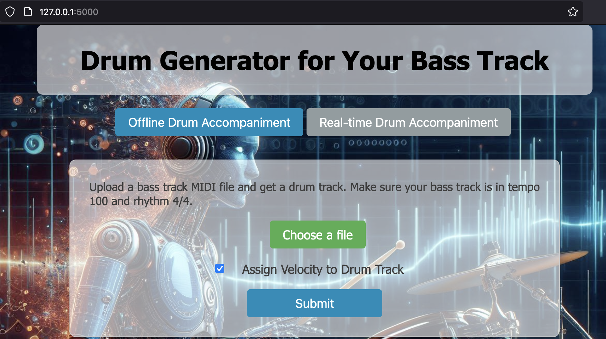
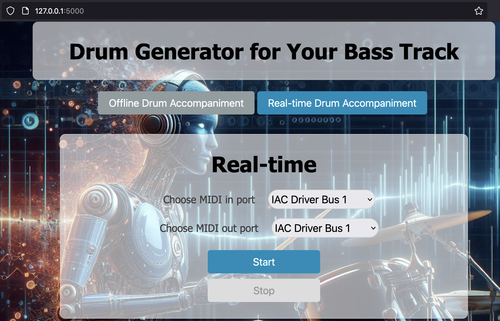

This application is primarily targeted for macOS and is recommended for use on Mac devices.
Download the application from the link provided on this page (link).
Unzip the downloaded file, navigate to the extracted folder, and double-click on the DAM application.
A terminal will open and, after a few seconds, will display Running on http://127.0.0.1:5000.
Once you see this message, open your preferred browser (Firefox and Chrome are recommended) and enter http://127.0.0.1:5000 in the address bar to access the DAM app.
This app can be used in two modes: offline and real-time.
In offline mode, you upload a MIDI file containing the bass track you want to accompany with drums.
You can choose whether the generated drum track should include velocity information, which makes the drum track sound more human-like.
Upon clicking the submit button, the DAM app will prompt you to save the generated drum track in MIDI format.

Switch to the real-time tab to view the available MIDI ports on your machine.
The MIDI in port listens for incoming MIDI notes of your bass track, while the MIDI out port outputs the generated drum MIDI notes.
Note that the app generates only MIDI notes and does not produce audio. You can use applications like Logic Pro on Mac to receive and hear the drum MIDI notes.
Click the Start button to begin listening to the MIDI in port. After some time, the app will start generating drum notes.
To stop the app, click the Stop button and wait for the confirmation message indicating the app has stopped.

To quit the app, close the terminal window that opened when you started the app. Simply closing the browser window will not terminate the application.
If you encounter any errors or issues, please report them on the GitHub page (link) in the Issues section.